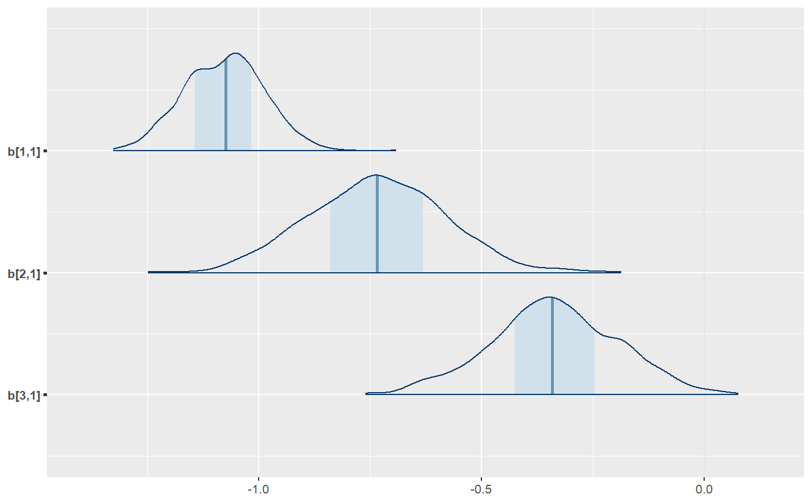
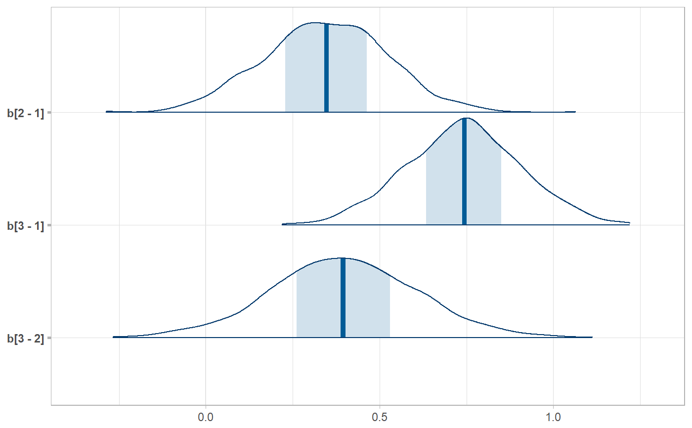

R/ungather_samples.R, R/unspread_samples.R
unspread_samples.RdInverse operations of spread_samples and gather_samples, giving
results that look like as_sample_tibble.
ungather_samples(data, ..., term = "term", estimate = "estimate", indices = c(".chain", ".iteration"), drop_indices = FALSE) unspread_samples(data, ..., indices = c(".chain", ".iteration"), drop_indices = FALSE)
| data | A tidy data frame of samples, such as one output by |
|---|---|
| ... | Expressions in the form of
|
| term | The name of the column in |
| estimate | The name of the column in |
| indices | Character vector of column names in |
| drop_indices | Drop the columns specified by |
A data frame.
These functions take symbolic specifications of parameter names and indices in the same format as
spread_samples and gather_samples and invert the tidy data frame back into
a data frame whose column names are parameters with indices in them.
library(dplyr) data(RankCorr, package = "tidybayes") # We can use unspread_samples to allow us to manipulate samples with tidybayes # and then transform the samples into a form we can use with packages like bayesplot. # Here we subset b[i,j] to just values of i in 1:3 and j == 1, then plot with bayesplot RankCorr %>% spread_samples(b[i,j]) %>% filter(i %in% 1:3, j == 1) %>% unspread_samples(b[i,j], drop_indices = TRUE) %>% bayesplot::mcmc_areas()# As another example, we could use compare_levels to plot all pairwise comparisons # of b[i,1] for i in 1:3 RankCorr %>% spread_samples(b[i,j]) %>% filter(i %in% 1:3, j == 1) %>% compare_levels(b, by = i) %>% unspread_samples(b[i], drop_indices = TRUE) %>% bayesplot::mcmc_areas()